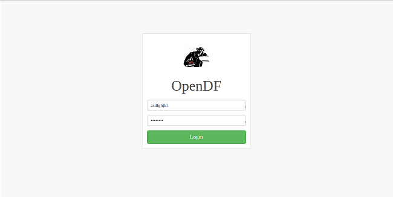
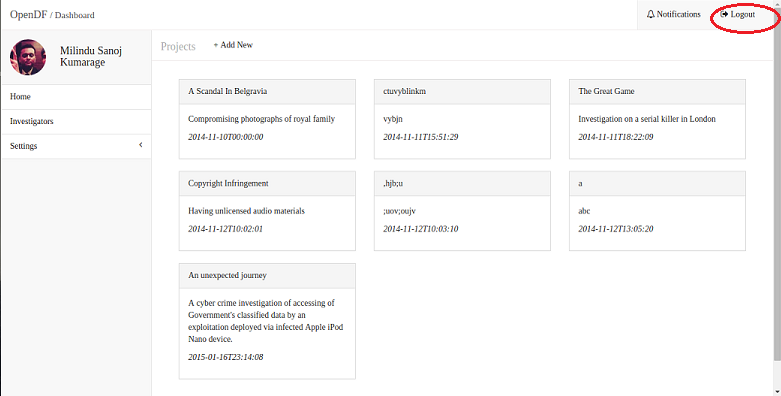
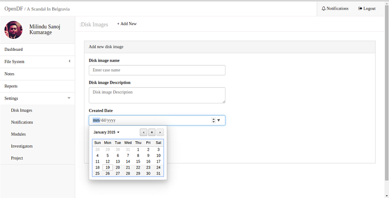
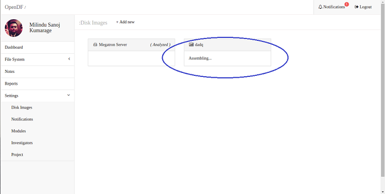
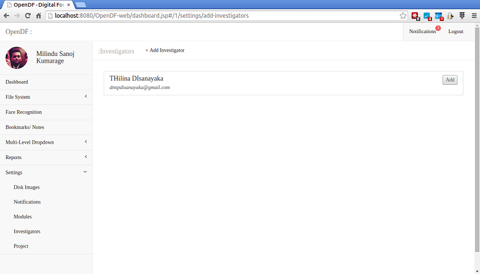

First step in the system is to log to the system. For that you need to use the “Login page”. First enter the email address correctly and then enter the correct password and click login button. If both are correct then only you will be able to go inside the system otherwise it will give you warning massage. If you get that then click ‘ok’ and try again.
Username required minimum 8 characters and password required minimum 5 characters.
When click on “reminder me” it will save the email address and the password, so it will not need to type them again in the next login.
Once a user log to the system first page would be the recent projects page. It will show the working projects. There will be several tabs in the left side of the page,
When a user move to a project by clicking on the relevant project, the system will move to the dashboard of the relevant project.
In the dashboard there will be fields containing,
In the left side of the page there will be several tabs containing the fields,
Before login to a specific project if a user wants to edit his account, he can select settings from the left side tab and go to Account, edit the following fields which will be available there.
Finally when he click the submit button below the changes will save regarding the corresponding user. Reset button is used to go to the initial position.

After complete the tasks by the users they can logout from the system by clicking the “Logout” button in the top right of the page. This logout tab will be visible in every page of the system.
After login to the system, it will come to the projects page (recent projects page). There it will show the all the projects assigned to the relevant user. It includes all projects assigned to that user and shows the progress of those projects and the recent activities.
Once the user click on each project the system will move to the dashboard of the relevant project.

When the user log to a one specific project the dashboard of the relevant project will be visible. In the dashboard there will be fields containing,
In the left side of the page there will be several tabs containing the fields,
From this feature users can add new projects to the system. Once they received a new project they can add that to the system. For that, login to the system and in the projects page on the top left of that page there’s a “+” sign. Click on that and then it will appear the “add new case form”. There are 3 text boxes for the name, description and for the date. After filling those fields can submit the case by the “submit” button. From the “reset” button can move to the default form.

Any investigator can perform this task. After login to the system the user can go to the relevant project dashboard and click “settings” on the left side tab and choose disk images from that. Then system will move to the disk images page. Once click on the “+Add New” on the top of the page, the user can add a new disk image to the project by filling the relevant fields in the form.
After upload a disk image to the system it will show the disk image in this page. Several disk images will be shown there and in the newly add disk image state will show as: uploading
The progress of the analyzing of uploaded disk image will be shown in the relevant disk image box as “Assembling”
Investigators can be added to the system in two ways.
Both these tasks are done by the investigating head.
Login → Investigators → Add
Login → Dashboard → Settings → Investigators → Add
The investigating head can add investigators to each project from this feature. For this you have to login to the system as the head investigator. After you login to the system and login to the dashboard of the relevant project it will show settings in the left side tabs. Once you click on that tabs and select Investigators it will come to add investigators page. Once click on the add button of the relevant investigator,| he will added to the system. You can add more than one investigator to a project.
Login → Dashboard → Settings → Investigators
From this feature you can see the relevant investigators who are assigned for a project. Any investigator can perform this task. For that, login to the system and it will show settings in the left side tabs. Once click on that tabs and select Investigators it will come to add investigators page.

Login → Dashboard → Settings → File Systems → Browse file by Type
After analyze a relevant disk image, the analyzed files in the disk image will be shown in this file system feature. Users can browse these analyzed files in 2 ways.
This feature is used to browse files by their type of a relevant disk image. Any investigator can perform this task. After login to the system it will show settings in the left side tabs. Once you click File systems on that tab and click Browse by File type it will come to Browse file by type page. In this page there it will show the types of the files.

Login → Dashboard → Settings → File Systems → Browse file by Hierarchy
This feature is used to browse files by their type of a relevant project. Any investigator can perform this task. After login to the system it will show settings in the left side tabs. Once you click File systems on that tab and click Browse by File hierarchy it will come to Browse file by hierarchy page.

Login → Dashboard → Reports
From this feature users can view the relevant reports for each project. Any investigator can perform this task. After login to the system it will show Reports in the left side tabs. Once you click Reports on that tab it will come to the reports page. There are 3 types of reports in the system,

The users can download the reports by clicking the download button in the top right of the page.
The following is an example of the current state report. It contains details about the,